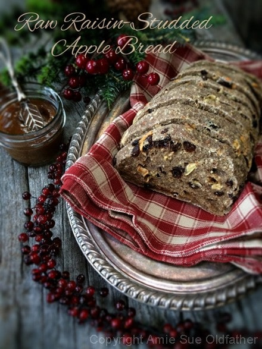

Raisin-Studded Apple Bread

~ raw, vegan, gluten-free ~
This bread is meant to seize the imagination of raisin lovers everywhere – the entire loaf is loaded with wholesome ingredients. It is a dense, rustic bread that can be enjoyed by all… meaning, both raw and non-raw foodists.
If you are new to the raw food eating lifestyle, it may seem hard to wrap your head around the idea of raw bread. It might not even sound good. So let me clarify…
This bread (and all of my raw bread recipes) are gluten-free, dairy-free, yeast-free, and lastly, they are raw. Meaning that they haven’t been baked in an oven but instead dehydrated at 115 degrees (F).
This homemade rustic bread is one of the most delicious, crusty, golden brown, perfect breads that will ever come out of your dehydrator. Ok, ok, I guess I can easily say that about any of my raw bread recipes. I am just a massive fan of all of them, and I hope that you, too, become a fan as well.
I am a bit particular about the ingredients that I use in my loaves of bread. Can you make substitutions? You bet, but they will change the flavor and texture. If you find that too many of the ingredients don’t agree with your system, you can either check out some of my other bread recipes to see if there is one that is more fitting for your dietary needs or you can play around with other ingredients.
For some ideas, you can replace the oats with ground nuts, seeds, and buckwheat (perhaps a combination of them all?). That is how new recipes come into creation! :) If you are looking to replace the flax seeds, you can use chia seeds. I highly recommend the presence of psyllium powder and almond pulp. The psyllium gives the bread a “sponginess, ” and the almond pulp helps to give it some “air.” Replace them at your own risk. :)
The spread that you see in the photo is merely raw honey with cinnamon stirred into it. Delicious!
yields a 7 1/2″ x 4 1/2″ x 3 1/2″ loaf
Dry Ingredients:
Wet ingredients:
- 2 cups moist, packed, almond pulp
- 1 cup raw applesauce
- 3 Tbsp raw honey or raw coconut nectar for vegan
- 1 Tbsp fresh lemon juice
- 1/2 cup raisins, rehydrated in 1/2 cup water
- 1 cup dried apples, rehydrated in 1/2 cup water
Preparation:
- To rehydrate the raisins and apples, place them in a bowl and cover with 1 cup of warm water.
- This is good to do while you are preparing the other ingredient.
- Let them soak for at least 15 minutes or until plump. This will add a wonderful texture to the bread. Do not drain. We will be adding the soak water to the batter.
- In a food processor, fitted with the “S” blade, process the oats to a powder.
- Add the ground flax seeds, psyllium, coconut crystals, and salt. Pulse to combine and place in a large bowl.
- Add the almond pulp, applesauce, sweetener, lemon juice, raisins, apples along with their soak water.
- Hand mix until everything until incorporated. Transfer to a cutting board to shape into a loaf.
- Place the loaf on the mesh sheet that comes with the dehydrator.
- Dehydrate at 145 degrees (F) for 1 hour to form a crunchy exterior on the bread.
- Remove from the teflex sheet and place it on a cutting board.
- Slice the bread into desired thickness. I cut mine about 1″ thick.
- Lay the bread slices onto the mesh sheet that came with the dehydrator and continue drying for approx — 6-10 hrs at 115 degrees (F).
- You can leave the bread as moist or as dry as you desire.
- Shelf life and storage: My recommendation would be to store this bread in an air-tight container, in the fridge, for 3-5 days.
- The more moisture that is left in your bread, the shorter the shelf life. Therefore, shelf life will vary with your drying technique. Whenever I make this bread, it never lasts very long enough to spoil.
- Keep in mind, the whole purpose of eating a raw diet is to eat foods at their peak of freshness, so don’t expect this bread to have an extended expiration date.
- On an odd note for a raw site, this bread toasts wonderfully. I had some house guests throw it in the toaster, not realizing that I designed it as a raw bread. Hehe, They loved it.
The Institute of Culinary Ingredients™
- Raw Coconut Crystals add a “brown sugar” flavor to a recipe. Read about it (here).
- Raw honey isn’t vegan, but I still use it now and again. Read (here) why I like to.
- Learn about the wonderful characteristics of Raw Coconut Nectar (here).
- What is Himalayan pink salt, and does it matter? Click (here) to read more about it.
- Are oats gluten-free? Yes, read more about that (here).
- Are oats raw? Yes, they can be found. Click (here) to learn more.
- Do I need to soak and dehydrate oats? Not required but recommended. Click (here) to see why.
- Learn how to grind your own flaxseeds for ultimate freshness and nutrition. Click (here).
- How does psyllium work in a recipe? Learn more (here).
Culinary Explanations:
- Why do I start the dehydrator at 145 degrees (F)? Click (here) to learn the reason behind this.
- When working with fresh ingredients, it is essential to taste test as you build a recipe. Learn why (here).
- Don’t own a dehydrator? Learn how to use your oven (here). I do, however honestly believe that it is a worthwhile investment. Click (here) to learn what I use.

© AmieSue.com